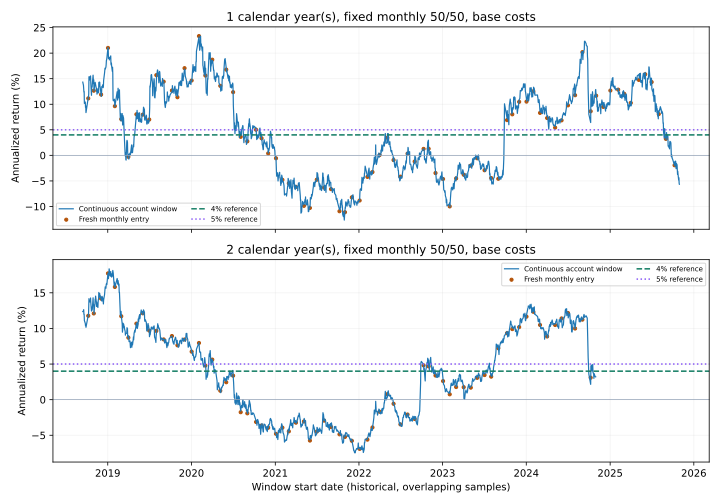

个人量化研究 · 历史证据审计 · 2026-11-06启动 / 11-07核验
4%～5%目标，历史证据支持到什么程度？
目前结论：不能据此确认长期目标可稳定实现
历史数据截至 2026-10-30。固定月度50/50组合全期年化约4.02%，但一年、两年窗口中存在明显亏损和起点差异。以下是历史样本占比，不是未来成功概率。新计算没有调参、选优，也没有增加前瞻观察日。
| 账户 / 费用 | 年数 | 完整窗口 | 年化≥4% | 年化≥5% | 亏损窗口 | 年化中位数 | 年化最小～最大 | 最差窗口回撤 |
|---|---|---|---|---|---|---|---|---|
| 连续 / base | 1 | 1725 | 924/1725 (53.57%) | 891/1725 (51.65%) | 614/1725 (35.59%) | 5.98% | -12.66% ～ 23.32% | 14.48% |
| 连续 / base | 2 | 1482 | 708/1482 (47.77%) | 646/1482 (43.59%) | 515/1482 (34.75%) | 3.71% | -7.47% ～ 18.37% | 18.14% |
| 新入场 / base | 1 | 85 | 45/85 (52.94%) | 45/85 (52.94%) | 30/85 (35.29%) | 6.84% | -11.13% ～ 23.33% | 14.61% |
| 新入场 / base | 2 | 73 | 34/73 (46.58%) | 31/73 (42.47%) | 25/73 (34.25%) | 3.37% | -6.92% ～ 17.73% | 18.24% |
相同策略，不同入场时点

蓝线继承原账户持仓与现金；橙点是每个完整可观察月份首个交易日从10万元现金开始的账户，首日观察、下一交易日才执行。两类问题分别展示。均包含冻结模型交易费用和滑点，期末不强制卖出，未计期末变现费用。
周年日不是交易日时，取之后首个已核验交易日；按实际日数 / 365.25 年化。未满完整持有期的尾部样本排除。窗口回撤从窗口起点重新计峰，不能替代原年度回撤标准。
重叠样本与全部费用场景
每日滚动窗口高度重叠。另按12个月偏移分别构造组内不重叠窗口，12组之间仍相关，不合并为独立样本，也不据此给出置信概率。
- 1年：每组 7～8 个窗口，组内年化≥4%的历史占比 42.86%～57.14%
- 2年：每组 3～4 个窗口，组内年化≥4%的历史占比 33.33%～66.67%
下面公开全部18个原固定账户（6策略 × 3费用），本金10万元、延迟1个交易日；原162场景保持原样，本次窗口审计没有扩展为162场景优化。
| 账户 / 费用 | 年数 | 完整窗口 | 年化≥4% | 年化≥5% | 亏损窗口 | 年化中位数 | 年化最小～最大 | 最差窗口回撤 |
|---|---|---|---|---|---|---|---|---|
| cash_low | 1 | 1725 | 0/1725 (0.00%) | 0/1725 (0.00%) | 0/1725 (0.00%) | 0.00% | 0.00% ～ 0.00% | 0.00% |
| cash_low | 2 | 1482 | 0/1482 (0.00%) | 0/1482 (0.00%) | 0/1482 (0.00%) | 0.00% | 0.00% ～ 0.00% | 0.00% |
| cash_base | 1 | 1725 | 0/1725 (0.00%) | 0/1725 (0.00%) | 0/1725 (0.00%) | 0.00% | 0.00% ～ 0.00% | 0.00% |
| cash_base | 2 | 1482 | 0/1482 (0.00%) | 0/1482 (0.00%) | 0/1482 (0.00%) | 0.00% | 0.00% ～ 0.00% | 0.00% |
| cash_high | 1 | 1725 | 0/1725 (0.00%) | 0/1725 (0.00%) | 0/1725 (0.00%) | 0.00% | 0.00% ～ 0.00% | 0.00% |
| cash_high | 2 | 1482 | 0/1482 (0.00%) | 0/1482 (0.00%) | 0/1482 (0.00%) | 0.00% | 0.00% ～ 0.00% | 0.00% |
| equity_hold_low | 1 | 1725 | 938/1725 (54.38%) | 915/1725 (53.04%) | 696/1725 (40.35%) | 7.54% | -25.69% ～ 49.76% | 28.24% |
| equity_hold_low | 2 | 1482 | 717/1482 (48.38%) | 683/1482 (46.09%) | 597/1482 (40.28%) | 3.57% | -16.01% ～ 35.41% | 35.97% |
| equity_hold_base | 1 | 1725 | 938/1725 (54.38%) | 915/1725 (53.04%) | 696/1725 (40.35%) | 7.54% | -25.70% ～ 49.78% | 28.25% |
| equity_hold_base | 2 | 1482 | 718/1482 (48.45%) | 683/1482 (46.09%) | 597/1482 (40.28%) | 3.57% | -16.01% ～ 35.42% | 35.98% |
| equity_hold_high | 1 | 1725 | 938/1725 (54.38%) | 915/1725 (53.04%) | 696/1725 (40.35%) | 7.55% | -25.72% ～ 49.84% | 28.27% |
| equity_hold_high | 2 | 1482 | 718/1482 (48.45%) | 683/1482 (46.09%) | 597/1482 (40.28%) | 3.57% | -16.03% ～ 35.47% | 36.00% |
| bond_hold_low | 1 | 1725 | 252/1725 (14.61%) | 95/1725 (5.51%) | 70/1725 (4.06%) | 2.74% | -2.86% ～ 8.25% | 4.50% |
| bond_hold_low | 2 | 1482 | 57/1482 (3.85%) | 0/1482 (0.00%) | 0/1482 (0.00%) | 2.71% | 0.34% ～ 4.50% | 4.50% |
| bond_hold_base | 1 | 1725 | 253/1725 (14.67%) | 95/1725 (5.51%) | 70/1725 (4.06%) | 2.74% | -2.86% ～ 8.25% | 4.50% |
| bond_hold_base | 2 | 1482 | 57/1482 (3.85%) | 0/1482 (0.00%) | 0/1482 (0.00%) | 2.71% | 0.34% ～ 4.50% | 4.50% |
| bond_hold_high | 1 | 1725 | 254/1725 (14.72%) | 95/1725 (5.51%) | 70/1725 (4.06%) | 2.75% | -2.86% ～ 8.26% | 4.51% |
| bond_hold_high | 2 | 1482 | 57/1482 (3.85%) | 0/1482 (0.00%) | 0/1482 (0.00%) | 2.71% | 0.34% ～ 4.51% | 4.51% |
| monthly_20_80_low | 1 | 1725 | 892/1725 (51.71%) | 771/1725 (44.70%) | 271/1725 (15.71%) | 4.26% | -3.02% ～ 9.72% | 4.68% |
| monthly_20_80_low | 2 | 1482 | 656/1482 (44.26%) | 494/1482 (33.33%) | 153/1482 (10.32%) | 3.61% | -1.51% ～ 8.43% | 4.68% |
| monthly_20_80_base | 1 | 1725 | 892/1725 (51.71%) | 770/1725 (44.64%) | 271/1725 (15.71%) | 4.26% | -3.03% ～ 9.72% | 4.68% |
| monthly_20_80_base | 2 | 1482 | 657/1482 (44.33%) | 494/1482 (33.33%) | 152/1482 (10.26%) | 3.61% | -1.50% ～ 8.43% | 4.68% |
| monthly_20_80_high | 1 | 1725 | 891/1725 (51.65%) | 771/1725 (44.70%) | 268/1725 (15.54%) | 4.26% | -2.98% ～ 9.68% | 4.65% |
| monthly_20_80_high | 2 | 1482 | 656/1482 (44.26%) | 494/1482 (33.33%) | 150/1482 (10.12%) | 3.61% | -1.48% ～ 8.41% | 4.65% |
| monthly_50_50_low | 1 | 1725 | 927/1725 (53.74%) | 893/1725 (51.77%) | 613/1725 (35.54%) | 5.99% | -12.66% ～ 23.38% | 14.49% |
| monthly_50_50_low | 2 | 1482 | 710/1482 (47.91%) | 648/1482 (43.72%) | 514/1482 (34.68%) | 3.71% | -7.47% ～ 18.46% | 18.13% |
| monthly_50_50_base | 1 | 1725 | 924/1725 (53.57%) | 891/1725 (51.65%) | 614/1725 (35.59%) | 5.98% | -12.66% ～ 23.32% | 14.48% |
| monthly_50_50_base | 2 | 1482 | 708/1482 (47.77%) | 646/1482 (43.59%) | 515/1482 (34.75%) | 3.71% | -7.47% ～ 18.37% | 18.14% |
| monthly_50_50_high | 1 | 1725 | 923/1725 (53.51%) | 891/1725 (51.65%) | 616/1725 (35.71%) | 6.00% | -12.70% ～ 23.28% | 14.52% |
| monthly_50_50_high | 2 | 1482 | 708/1482 (47.77%) | 648/1482 (43.72%) | 515/1482 (34.75%) | 3.72% | -7.49% ～ 18.36% | 18.17% |
| trend_120_low | 1 | 1725 | 534/1725 (30.96%) | 477/1725 (27.65%) | 715/1725 (41.45%) | 1.42% | -11.37% ～ 19.55% | 11.71% |
| trend_120_low | 2 | 1482 | 467/1482 (31.51%) | 343/1482 (23.14%) | 692/1482 (46.69%) | 1.32% | -7.34% ～ 9.65% | 14.78% |
| trend_120_base | 1 | 1725 | 522/1725 (30.26%) | 468/1725 (27.13%) | 726/1725 (42.09%) | 1.29% | -11.57% ～ 19.46% | 11.85% |
| trend_120_base | 2 | 1482 | 441/1482 (29.76%) | 320/1482 (21.59%) | 695/1482 (46.90%) | 1.19% | -7.54% ～ 9.51% | 15.14% |
| trend_120_high | 1 | 1725 | 493/1725 (28.58%) | 448/1725 (25.97%) | 765/1725 (44.35%) | 0.91% | -12.09% ～ 19.12% | 12.27% |
| trend_120_high | 2 | 1482 | 388/1482 (26.18%) | 273/1482 (18.42%) | 704/1482 (47.50%) | 0.74% | -7.97% ～ 9.16% | 15.94% |
官方中期持仓：截至2026-06-30
两份中期财务报表注明未经审计，分别于8月29日、8月31日公告。六月末完整股票表与九月末季度摘要是不同观察时点，均不能称当前持仓，也不回填成历史持仓序列。
510300：核对300项指数投资和39项积极投资，共339个证券代码。逐表金额精确对齐，股票资产 95.92% / 净资产，95.11% / 总资产；两个分母不可混用。前十大占净资产 23.24%。股票部分 HHI 0.011032，等效证券数 90.64；这不是全基金或最终发行人集中度。
511010：国家债券占净资产 98.89%。披露的前五代码只覆盖债券资产 88.28%，完整证券 HHI 保持未知。官方跨市场代码映射归并后为三期已知国债：2025年记账式附息（二十期）国债：至少占净资产 41.42%；2026年记账式附息（八期）国债：至少占净资产 34.20%；2026年记账式附息（三期）国债：至少占净资产 11.68%。财政部发行人风险不能按五个代码分散计算。
九月末前五代码也可归并为三期国债，单独结果见持仓 JSON；不得把六月权重与九月权重拼接。
金额、分母、代码映射与原文页码 · 339项股票明细 · 510300官方原文快照 · 511010官方原文快照跨年准备与工程证据
本轮未取得2027年官方日历；索引快照未出现2027，不等于证明所有官方渠道尚未发布。现有日历仅覆盖至2026年。5个模拟边界检查通过，2027年缺少证据时，健康检查和数据准入均阻断，不把未知年份当休市。
标准库 / Decimal 独立核对 291000 个数值字段、474 组摘要；255个新账户首日现金及信号时序另行检查。既有历史、协议、前瞻账户和11月6日目标均保留。